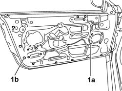

7205E36 STRIPPING FRONT SIDE DOOR
- Path
- Procedures > 72 PANELS AND FRAME > 7205 STRIPPING FOR REPLACEMENT OPERATIONS > 7205E EXTERIOR PARTS > 7205E36 STRIPPING FRONT SIDE DOOR
- Kind
- repair procedure (removal / refitting; the operation number is the code)
- Applies to
- all engines; all production periods
- Interactive page
- https://sloeber94.github.io/elrnDB-aGt/en/#/125002016
Applies to: all engines; all production periods
 Removing
Removing
 Refitting
RefittingOp. 7005E12 CORNER COVER OF ONE FRONT SIDE DOOR, LH OR RH R R
Op. 7005C44 INTERIOR HANDLE PANEL - R R
(for driver's door)
Op. 7005M12 PASSENGER SIDE FRONT DOOR ELECTRICALLY OPERATED WINDOW SWITCH - R R
(for passenger door)
Op. 7005E08 FRONT SIDE DOOR INTERIOR PANEL R R
Op. 5570T90 FRONT SPEAKER - R R
Op. 7005M40 FRONT ELECTRIC WINDOW SYSTEM ECU - R+R FOLLOWING ELECTRICAL WIRING CHECK
Op. 7005A04 FRONT SIDE DOOR WATER GUARD PROTECTION - R R OR REPLACE WITH DOOR PANEL REMOVED
Op. 7005A28 FRONT SIDE DOOR LIMITER- REPAIR OR REPLACE
Op. 7005A46 FRONT SIDE DOOR LOWER SEAL R R
Op. 7005E91 PARTITION ON ONE FRONT DOOR (LH OR RH) - R R WITH DOOR PANEL REMOVED
Op. 7005D26 FRONT SIDE DESCENDING WINDOW GLASS SCRAPER (OUTER) R R
Op. 7005D14 FRONT SIDE DOOR DESCENDING WINDOW GLASS - R R WITH DOOR PANEL (AND MOUNT FRAME) REMOVED
Op. 7005C10 FRONT DOOR OUTER HANDLE - R R WITH DOOR PANEL REMOVED
Op. 7005C52 INTERIOR OPENING HANDLE - R R
Op. 7005D33 CHANNEL OF DOOR DESCENDING GLASS INNER GUIDE (ONE) LH OR RH ON FRONT SIDE DOOR - R R
Op. 7005R30 ELECTRICALLY CONTROLLED DOOR MIRROR (ONE) - R+R
Op. 7005D24 FRONT DOOR WINDOW REAR GUIDE - R R
Op. 7005M20 FRONT SIDE DOOR ELECTRIC WINDOW SYSTEM - R R WITH DOOR PANEL/SUPPORT FRAME REMOVED
Op. 7005N20 FRONT SIDE DOOR LOCK MOTOR/CATCH ASSEMBLY - RR WITH DOOR PANEL AND SUPPORT FRAME REMOVED
Op. 5505B10 FRONT DOOR WIRING - R R
1. Release the screw-in plugs (1a) and the retaining plugs (1b) using the special tool.
 | Name | Country |
|---|---|---|
1 | Scraper blade | 1.823.015.000 |

Applies to: all engines; all production periods
Refitting
RemovingCheck that the parts to be refitted are undamaged.
Fit the new retaining and screw-in plugs.
Op. 5505B10 FRONT DOOR WIRING - R R
Op. 7005N20 FRONT SIDE DOOR LOCK MOTOR/CATCH ASSEMBLY - RR WITH DOOR PANEL AND SUPPORT FRAME REMOVED
Op. 7005M20 FRONT SIDE DOOR ELECTRIC WINDOW SYSTEM - R R WITH DOOR PANEL/SUPPORT FRAME REMOVED
Op. 7005D24 FRONT DOOR WINDOW REAR GUIDE - R R
Op. 7005R30 ELECTRICALLY CONTROLLED DOOR MIRROR (ONE) - R+R
Op. 7005D33 CHANNEL OF DOOR DESCENDING GLASS INNER GUIDE (ONE) LH OR RH ON FRONT SIDE DOOR - R R
Op. 7005C52 INTERIOR OPENING HANDLE - R R
Op. 7005C10 FRONT DOOR OUTER HANDLE - R R WITH DOOR PANEL REMOVED
Op. 7005D14 FRONT SIDE DOOR DESCENDING WINDOW GLASS - R R WITH DOOR PANEL (AND MOUNT FRAME) REMOVED
Op. 7005D26 FRONT SIDE DESCENDING WINDOW GLASS SCRAPER (OUTER) R R
Op. 7005E91 PARTITION ON ONE FRONT DOOR (LH OR RH) - R R WITH DOOR PANEL REMOVED
Op. 7005A46 FRONT SIDE DOOR LOWER SEAL R R
Op. 7005A28 FRONT SIDE DOOR LIMITER- REPAIR OR REPLACE
Op. 7005A04 FRONT SIDE DOOR WATER GUARD PROTECTION - R R OR REPLACE WITH DOOR PANEL REMOVED
Op. 7005M40 FRONT ELECTRIC WINDOW SYSTEM ECU - R+R FOLLOWING ELECTRICAL WIRING CHECK
Op. 5570T90 FRONT SPEAKER - R R
Op. 7005E08 FRONT SIDE DOOR INTERIOR PANEL R R
Op. 7005M12 PASSENGER SIDE FRONT DOOR ELECTRICALLY OPERATED WINDOW SWITCH - R R
(for passenger door)
(for driver's door)
Op. 7005C44 INTERIOR HANDLE PANEL - R R
Op. 7005E12 CORNER COVER OF ONE FRONT SIDE DOOR, LH OR RH R R
Topics linked from this page (21)
- 5505B10 FRONT DOOR WIRING - R R
- 5570T90 FRONT SPEAKER - R R
- 7005A04 FRONT SIDE DOOR WATER GUARD PROTECTION - R R OR REPLACE WITH DOOR PANEL REMOVED
- 7005A28 FRONT SIDE DOOR LIMITER- REPAIR OR REPLACE
- 7005A46 FRONT SIDE DOOR LOWER SEAL R R
- 7005C10 FRONT DOOR OUTER HANDLE - R R WITH DOOR PANEL REMOVED
- 7005C44 INTERIOR HANDLE PANEL - R R
- 7005C52 INTERIOR OPENING HANDLE - R R
- 7005D14 FRONT SIDE DOOR DESCENDING WINDOW GLASS - R R WITH DOOR PANEL (AND MOUNT FRAME) REMOVED
- 7005D24 FRONT DOOR WINDOW REAR GUIDE - R R
- 7005D26 FRONT SIDE DESCENDING WINDOW GLASS SCRAPER (OUTER) R R
- 7005D33 CHANNEL OF DOOR DESCENDING GLASS INNER GUIDE (ONE) LH OR RH ON FRONT SIDE DOOR - R R
- 7005E08 FRONT SIDE DOOR INTERIOR PANEL R R
- 7005E12 CORNER COVER OF ONE FRONT SIDE DOOR, LH OR RH R R
- 7005E91 PARTITION ON ONE FRONT DOOR (LH OR RH) - R R WITH DOOR PANEL REMOVED
- 7005M12 PASSENGER SIDE FRONT DOOR ELECTRICALLY OPERATED WINDOW SWITCH - R R
- 7005M14 SWITCH UNIT CONTROLLING ELECTRIC WINDOWS REAR VIEW MIRRORS AND DOOR LOCK ON DRIVERS SIDE FRONT DOOR R R
- 7005M20 FRONT SIDE DOOR ELECTRIC WINDOW SYSTEM - R R WITH DOOR PANEL/SUPPORT FRAME REMOVED
- 7005M40 FRONT ELECTRIC WINDOW SYSTEM ECU - R+R FOLLOWING ELECTRICAL WIRING CHECK
- 7005N20 FRONT SIDE DOOR LOCK MOTOR/CATCH ASSEMBLY - RR WITH DOOR PANEL AND SUPPORT FRAME REMOVED
- 7005R30 ELECTRICALLY CONTROLLED DOOR MIRROR (ONE) - R+R